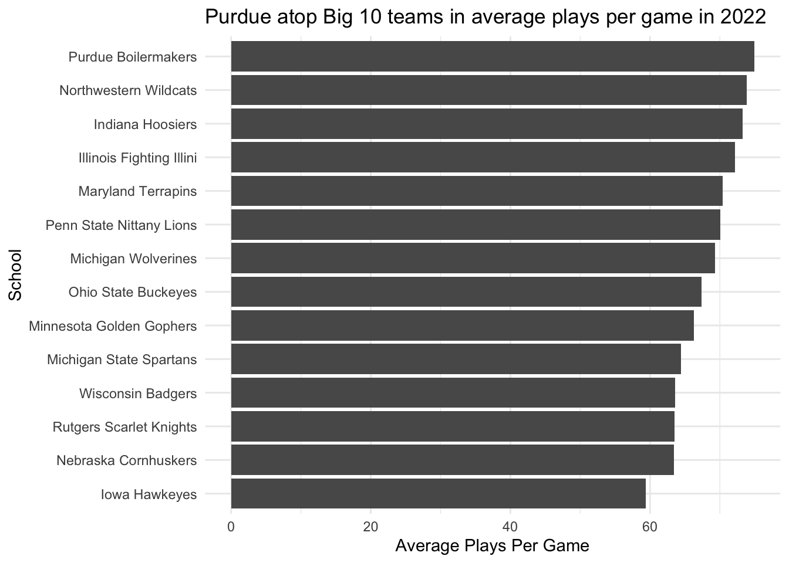
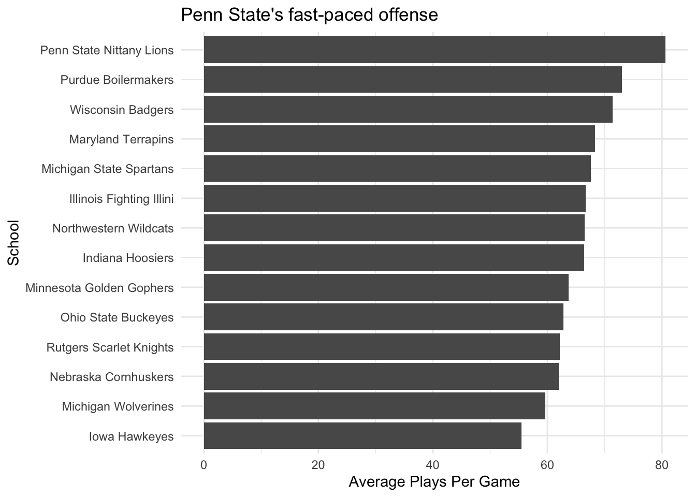

Rows: 1672 Columns: 54
── Column specification ────────────────────────────────────────────────────────
Delimiter: ","
chr (8): HomeAway, Opponent, Result, TeamFull, TeamURL, Outcome, Team, Con...
dbl (45): Game, PassingCmp, PassingAtt, PassingPct, PassingYds, PassingTD, ...
date (1): Date
ℹ Use `spec()` to retrieve the full column specification for this data.
ℹ Specify the column types or set `show_col_types = FALSE` to quiet this message.
Rows: 752 Columns: 54
── Column specification ────────────────────────────────────────────────────────
Delimiter: ","
chr (8): HomeAway, Opponent, Result, TeamFull, TeamURL, Outcome, Team, Con...
dbl (45): Game, PassingCmp, PassingAtt, PassingPct, PassingYds, PassingTD, ...
date (1): Date
ℹ Use `spec()` to retrieve the full column specification for this data.
ℹ Specify the column types or set `show_col_types = FALSE` to quiet this message.
Create a list of Big 10 teams.
Code
big10 <-c("Nebraska Cornhuskers", "Iowa Hawkeyes", "Minnesota Golden Gophers", "Illinois Fighting Illini", "Northwestern Wildcats", "Wisconsin Badgers", "Indiana Hoosiers", "Purdue Boilermakers", "Ohio State Buckeyes", "Michigan Wolverines", "Michigan State Spartans", "Penn State Nittany Lions", "Rutgers Scarlet Knights", "Maryland Terrapins")
Filter the data for 2022 using the Big 10 list.
Code
big22 <- logs22|>filter(TeamFull %in% big10)
Calculate the average number of offensive plays per Big 10 team in 2022.
Make a bar chart of the 2022 Big Ten offensive play averages using ggplot. Add the weight of the average plays to the aesthetic and then reorder the teams by that weight. Add labels for the title and each axis.
Purdue leads a top four of them, Northwestern, Indiana and Illinois among teams in the Big 10 that averaged the most plays per game in 2022. A lot of the teams in the Big 10 are bunched together around 70 plays or more per game, with the entirety of the top-half of the teams averaging over 69 plays per game. Iowa clearly brings up the rear at less than 60 plays per game, over 15 plays fewer than Purdue.
Code
ggplot() +geom_bar(data=big22plays, aes(x=reorder(TeamFull, avgPlays), weight = avgPlays) ) +labs(title="Purdue slightly atop Big Ten teams in average plays per game in 2022", x="School", y="Average Plays Per Game" ) +theme_minimal() +coord_flip()

Filter the data for 2023 using the Big 10 list.
Code
big23 <- logs23|>filter(TeamFull %in% big10)
Calculate the average number of offensive plays per Big 10 team in 2023.
Make a bar chart of the 2023 Big Ten offensive play averages using ggplot. Add the weight of the average plays to the aesthetic and then reorder the teams by that weight. Add labels for the title and each axis.
Penn State is way out in front among Big 10 teams in average plays per game up to this point in the 2023 season. Their 80.6 plays per game are over 7 more plays than second place, Purdue, and they’re averaging over 10 more plays per game this season than in 2022. Purdue and Wisconsin average over 70 plays per game as well to round out the top three, whilen Michigan and Iowa rank in the bottom two in the conference at less than 60 plays per game.
Code
ggplot() +geom_bar(data=big23plays, aes(x=reorder(TeamFull, avgPlays), weight = avgPlays) ) +labs(title="Penn State far atop Big Ten teams in average plays per game in 2023", x="School", y="Average Plays Per Game" ) +theme_minimal() +coord_flip()

Divide the sum of the entirety of the Big 10 teams’ 2022 plays by 14 to get the average number of plays for the conference.
The biggest takeaway to me is that Big 10 teams are running slightly fewer plays per game this season than in 2022, but not by much. Despite the NCAA aiming to shorten games — and in turn, possessions — by a noticeable margin through the new first down rule, Big 10 teams aren’t even averaging two less plays per game. There’s an influx of certain teams running more plays on average in 2023 — most notably Penn State and Wisconsin — and an influx of certain teams running less plays on average in 2023 — most notably Northwestern and Indiana — but at the end of the day, on average, there are only slightly less plays being run for the Big 10 teams.